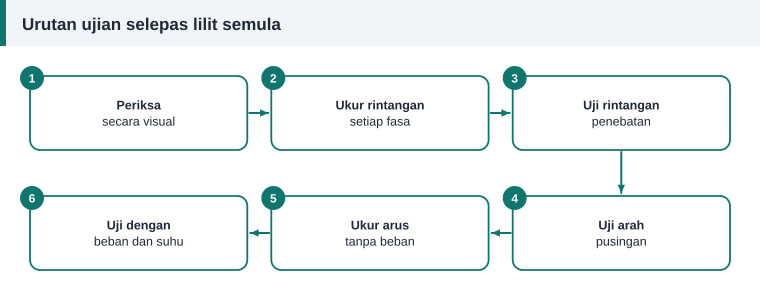

Ujian dan diagnosis
Ujian Selepas Lilit Semula: Rintangan, Keseimbangan dan Arus Tanpa Beban
Tiga ujian pertama dijalankan sebelum varnis, ketika kesilapan masih boleh dibaiki dengan membuka satu sambungan. Tiga yang terakhir dijalankan selepas motor dipasang semula.


Ujian 1: pemeriksaan visual
- Hujung belitan tidak menyentuh rangka, penutup hujung atau rotor.
- Tiada dawai terkeluar dari alur, dan semua baji duduk rapat.
- Setiap sambungan bersarung dan diikat.
- Tiada serpihan logam di dalam lubang stator.
Ujian 2: rintangan setiap fasa
Ukur dengan meter ohm rendah. Tiga bacaan sepatutnya hampir sama, dan perbezaan beberapa peratus daripada purata sudah patut disiasat. Bandingkan juga dengan nilai yang dikira daripada panjang dan saiz dawai.
- Rintangan satu fasa lebih rendah: lilitan kurang, atau ada lilitan terpintas.
- Rintangan satu fasa lebih tinggi: sambungan lemah, atau lilitan berlebihan.
Bagi motor dengan tiga terminal sahaja, bacaan antara dua terminal ialah dua kali rintangan fasa dalam sambungan bintang, dan dua pertiga rintangan fasa dalam sambungan delta.
Ujian 3: rintangan penebatan
Uji setiap fasa ke teras dan antara fasa dengan penguji penebatan. Prosedur dan nilai minimum ada dalam ujian megger.
Ujian 4: kekutuban dan arah medan
Sebelum rotor dipasang, alirkan arus terus yang kecil melalui satu fasa, contohnya daripada bateri melalui sebiji lampu. Gerakkan kompas mengelilingi lubang stator. Jarum sepatutnya berbalik arah pada setiap kutub, dan bilangan kutub yang dikira mesti sama dengan reka bentuk. Kutub yang hilang menandakan satu kumpulan gegelung disambung terbalik.
Selepas motor dipasang, semak arah pusingan. Jika terbalik, tukar mana-mana dua wayar bekalan.
Ujian 5: arus tanpa beban
Jalankan motor tanpa beban pada voltan kadaran dan ukur arus ketiga-tiga fasa dengan meter pengapit.
- Ketiga-tiga arus sepatutnya hampir sama.
- Arus tanpa beban motor aruhan lazimnya sekitar 30% hingga 50% daripada arus beban penuh, dan boleh lebih tinggi bagi motor kecil atau berkelajuan rendah.
- Arus tanpa beban yang menghampiri arus beban penuh menandakan lilitan terlalu sedikit atau sambungan salah, contohnya delta di tempat bintang.
- Arus tanpa beban yang sangat rendah bersama tork lemah menandakan lilitan berlebihan.
Ujian 6: larian dan suhu
Dengar bunyi galas dan rasa getaran pada rangka. Kemudian jalankan motor dengan beban sebenar. Arus tidak boleh melebihi nilai plat nama, dan suhu rangka sepatutnya stabil selepas beberapa ketika, bukan terus naik.
Rekod keputusan
Catat semua bacaan pada kad data motor bersama tarikh dan suhu bilik. Bacaan hari ini menjadi garis asas untuk dibandingkan apabila motor itu diservis lagi.
Rujukan dan bacaan lanjut
Artikel berkaitan
Ujian Megger: Cara Mengukur Rintangan Penebatan Motor
Ujian rintangan penebatan mendedahkan belitan lembap, kotor atau rosak sebelum motor dihidupkan. Ikuti prosedur, voltan ujian dan nilai minimum yang disyorkan piawaian IEEE 43.
Mengapa Belitan Motor Terbakar: Lapan Punca dan Cara Mengenalnya
Belitan yang hangus menyimpan petunjuk tentang puncanya. Baca corak kerosakan untuk membezakan beban lampau, hilang fasa dan litar pintas supaya motor tidak terbakar semula.
Langkah Demi Langkah Melilit Semula Motor Tiga Fasa
Daripada menanggalkan belitan lama hingga ujian akhir, ikuti sepuluh langkah melilit semula stator motor tiga fasa dengan kemas, selamat dan mengikut amalan baik bengkel.